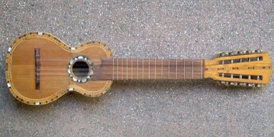

Home / Crossroads and Golden Ages / The Americas: Andes and South America
Encyclopedia ID 55
Charango

Strum and fret the ten-string small lute through guided songs and patterns.
Heritage note
Part of the living heritage of Bolivia, Peru. Some forms of this practice carry deep meaning for the communities who keep it; here we describe the play and the craft only, with respect for its roots.
Origins
Usually placed in the era of Crossroads and Golden Ages (about 500 to 1500), although its exact origins are uncertain, within the cultural world of The Americas: Andes and South America.
Sources
Related entries

Dombra
Kazakhstan · Musical instruments
Erhu Two-String Fiddle
China · Musical instruments
Buzuq Long-Neck Lute
Lebanon +2 · Musical instruments
Komuz
Kyrgyzstan · Musical instruments
Saz / Bağlama
Turkey · Musical instruments
Tar and mugham modes
Azerbaijan · Musical instruments